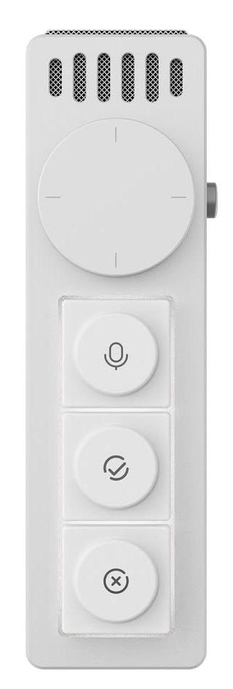

顶栏常驻
纯菜单栏应用，不占 Dock 和 ⌘Tab，点图标即可弹出迷你面板。
VibeKey 硬件配置工具 · 原生 macOS 版
原生菜单栏应用，把快捷键、媒体键与灯效直接写进 VibeKey 固件——离线也照常生效，不需要后台软件常驻。
brew install --cask palaemonboy/tap/openvibekey
已复制
下面是 Open VibeKey 主界面与菜单栏面板的可交互还原——纯前端模拟，感受一下真实的操作方式。

示例数据，试着切换修饰键或清除
↑ 试试：点快捷键行选中它、切换灯效模式、点系统麦克风的锁形图标、点右上角旋钮图标收起/展开菜单栏面板
纯菜单栏应用，不占 Dock 和 ⌘Tab，点图标即可弹出迷你面板。
3 个圆键与旋钮的左转 / 右转 / 按下都能配快捷键，写进设备固件，离线也生效。
静音、音量加减、播放暂停、上一曲下一曲，走设备固定功能通道，macOS 原生响应。
查看并切换系统默认输入设备；把默认输入锁定到 VibeKey，被别的 App 抢走会自动切回来。
指示灯模式与三档亮度，可选全灭 / 全亮 / 工作模式，各灯可单独设常亮或呼吸。
待机时长、休眠时长可调，一键重启设备。
配置存档，可新增多套随时切换，出差、工作室、居家各留一套。
登录 macOS 即自动启动，配置一次，之后无需再操心。
按键直接切到指定 App，没运行就启动它。App 常驻时生效，可随时改绑或解绑。
HID I/O 走 IOKit，运行时零依赖，不链接、不分发厂商代码。
下载 App 或用 Homebrew 安装。
通过 2.4G 接收器连接设备,请确保不要同时开启官方 App 和本工具，否则会有冲突。
给按键、旋钮配快捷键，设置灯效与麦克风锁定，一次配好，离线也生效。
Open VibeKey 全程离线运行：不联网、不收集任何数据、不上传任何使用信息，所有配置只保存在你的 Mac 本地。
驱动完全自主实现：HID 通信基于 IOKit；运行时不含任何 JS / Node / 浏览器，也不链接、不分发厂商代码。